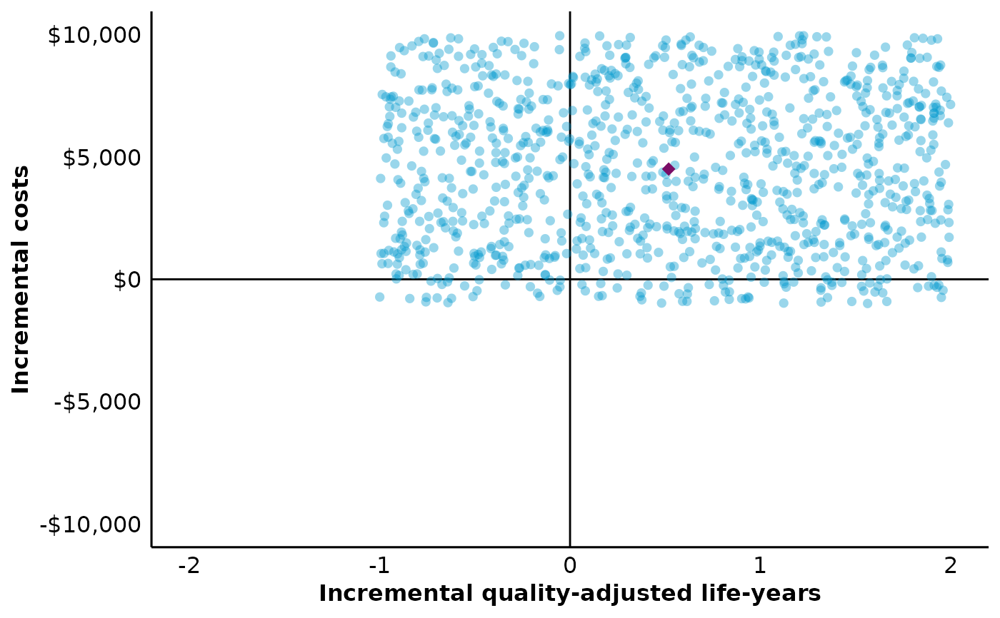

Plot incremental outcomes on the cost-effectiveness plane
plot_psa_scatter.Rdplot_psa_scatter takes a data.frame of incremental quality-adjusted life-years (QALYs) and incremental costs, as might be obtained from a probabilistic sensitivity analysis, and plots these data on the incremental cost-effectiveness plane.
Usage
plot_psa_scatter(
data,
delta_qalys,
delta_costs,
currency = "$",
point_alpha = 0.4,
point_color = "#249bc9",
point_shape = 16,
point_size = 2,
point_jitter_height = 0,
point_jitter_width = 0,
show_wtp = TRUE,
wtp_value = 1,
wtp_alpha = 1,
wtp_color = "#154754",
wtp_linetype = "dashed",
wtp_linewidth = 0.5,
show_mean = TRUE,
mean_alpha = 1,
mean_color = "#7a0d66",
mean_shape = 18,
mean_size = 3
)Arguments
- data
A data.frame.
- delta_qalys
Unquoted column name for incremental QALYs.
- delta_costs
Unquoted column name for incremental costs.
- currency
String for the currency symbol. Default is
$.- point_alpha
Numeric value for point opacity. Default is
0.4.- point_color
Point color. Default is
#249bc9.- point_shape
Integer value for point shape. Default is
16. See?pchfor available shapes.- point_size
Numeric value for point size. Default is
2.- point_jitter_height, point_jitter_width
Numeric value for vertical and horizontal jittering. Default is
0(no jittering). Be careful that some key-outcome pairs may not be plotted if there is too much jitter.- show_wtp
Boolean indicating if the willingness-to-pay (WTP) threshold should be displayed (as a line). Default is
TRUE.- wtp_value
Numeric value for WTP threshold. Default is
1, a deliberately unrealistic value to remind you to set the value to your specific example.- wtp_alpha
Numeric value for WTP threshold line opacity. Default is
1.- wtp_color
Color for WTP threshold line. Default is
#154754.- wtp_linetype
A valid specification of the WTP threshold line type. Default is
dashed(2). See the ggplot2 documentation for valid options.- wtp_linewidth
Numeric value for the WTP threshold line width. Default is
0.5.- show_mean
Boolean indicating if the mean of incremental QALYs and costs should be displayed (as a point). Default is
TRUE.- mean_alpha
Numeric value for mean point opacity. Default is
1.- mean_color
Color for the mean point. Default is
#7a0d66.- mean_shape
Integer value for mean point shape. Default is
18. See?pchfor available shapes.- mean_size
Numeric value for point size. Default is
3.
Details
Fore more information on the display of incremental outcomes on the cost-effectiveness plane, see, for example, Fenwick et al., 2006.
Examples
library(ggplot2)
df <- data.frame(d_qalys = runif(1000, -1, 2),
d_costs = runif(1000, -1000, 10000),
country = rep(c("Country A", "Country B"), each = 500))
plot_psa_scatter(df, d_qalys, d_costs, wtp_value = 20000)

# Facet plot by adding a call to facet_plot/facet_grid
plot_psa_scatter(df, d_qalys, d_costs, show_wtp = FALSE) +
facet_wrap(vars(country))
#> ! The WTP threshold is (still) set at 1.
# Don't forget that column names should be unquoted
if (FALSE) {
plot_psa_scatter(df, "d_qalys", "d_costs")
}